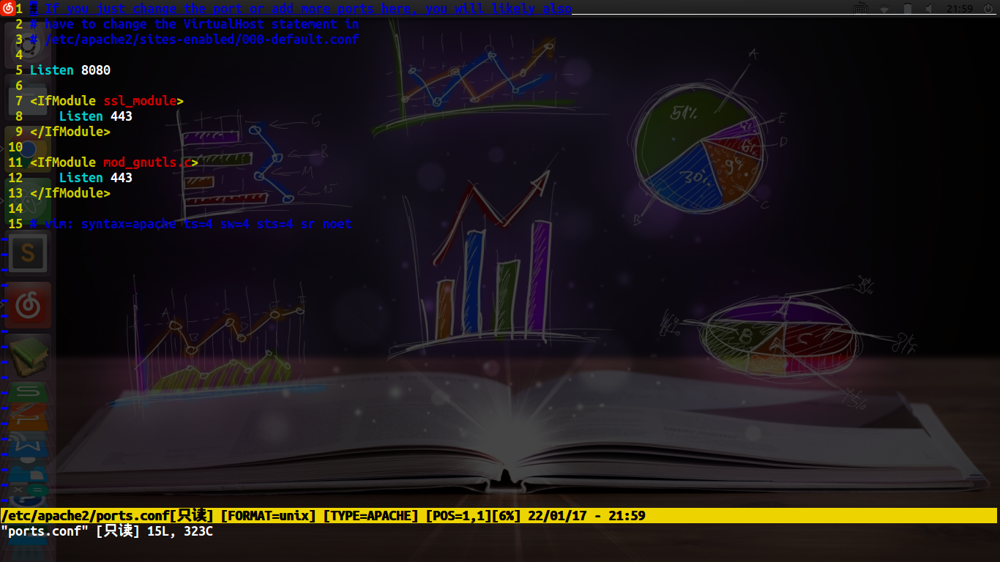
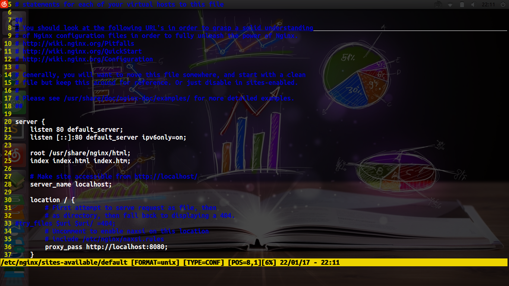
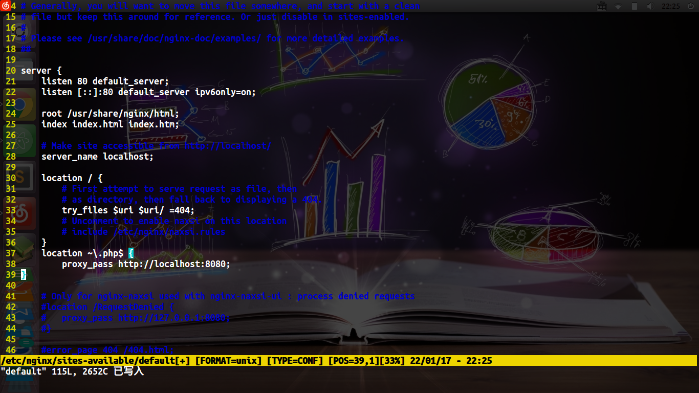

今天研究了Nginx反向代理的方法,因为一直是用apache,所以只是按个Nginx试试反向代理是咋搞的
首先要先把Apache配置到其他端口上
cd /etc/apache2/
sudo vim ports.conf
把Listen 改到 8080

重启一下服务器
sudo /etc/init.d/apache2 restart
配置Nginx
cd /etc/nginx/sites-available
sudo vim default
在location / {}里添加 proxy_pass http://localhost:8080;
并把 try_files $uri $uri/ =404; 注释掉

重启Nginx服务器
sudo /etc/init.d/nginx restart
这样一个反向代理就做好了,所有80端口的访问都会转到8080上
如果只想让php请求反向代理到Apache上
那么就要这样
